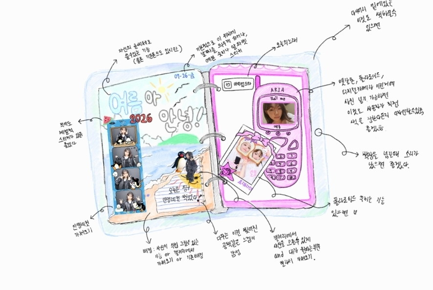
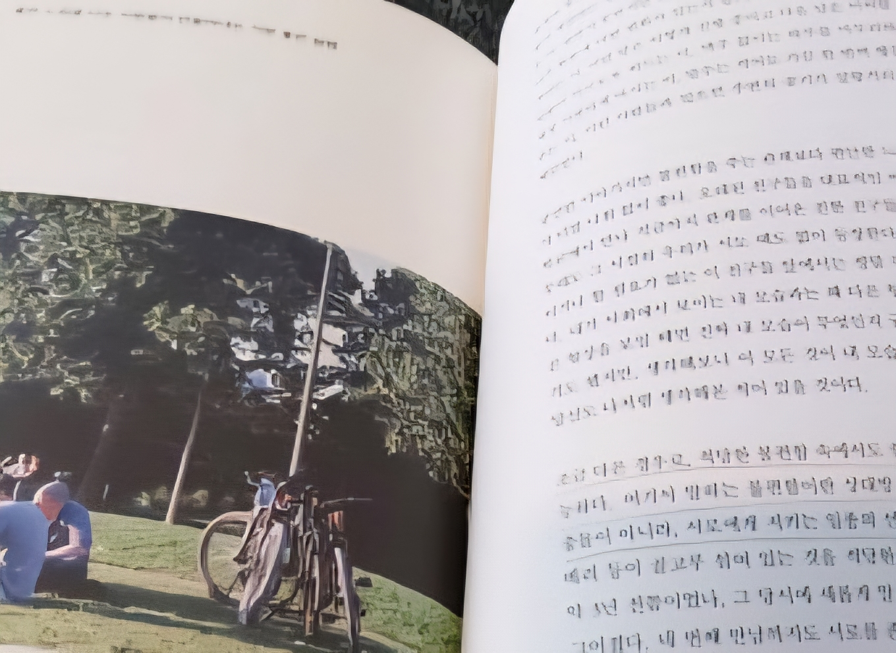
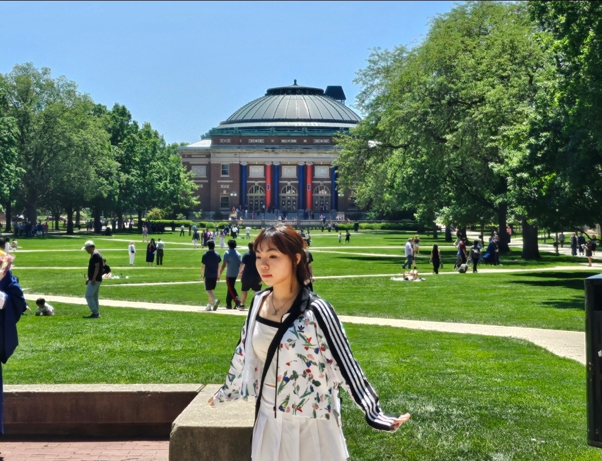

technology to realize
my curiosity
ARIA PARK | Student

About Me
일상에 질문을 던지는 호기심에서 시작해, 관찰한 불편함을 기술로 해결하고자 프로그래밍을 배우고 있습니다. 아이디어를 웹으로 구현하며, 생각이 기술이 되고 가치가 되는 과정을 경험하고 있습니다.
Personality
시행착오를 성장의 과정으로 받아들이는 자기성찰적인 성격입니다. 비판과 문제 상황을 객관적으로 바라보며 개선점을 찾고, 저작권 이슈 경험을 통해 책임 의식의 중요성을 배웠습니다. 또한 독서를 통해 시야를 넓히며 실수를 발전의 계기로 삼고 있습니다.


Experience
독일 교환학생 경험을 통해 ‘다름은 틀림이 아니다’라는 것을 배웠습니다. 가치관이 다른 친구들의 열정을 보며 타인을 제 기준으로 판단하기보다, 그들의 배경과 문화를 이해하려는 태도를 갖추게 되었습니다. 이를 통해 다양한 문화 속에서 열린 시각으로 관계를 형성하는 법을 배웠습니다.
Future Goals
저는 끊임없이 배우고 성장하는 과정에서 가장 큰 보람을 느낍니다. 아직 기술적으로 부족함을 느끼지만, 그 한계를 두려워하기보다 극복의 과정 속에서 성장할 수 있다고 믿고 있습니다. 앞으로 기술을 통해 세상의 불편함을 해결하며 도전하는 개발자로 성장하고자 합니다.
